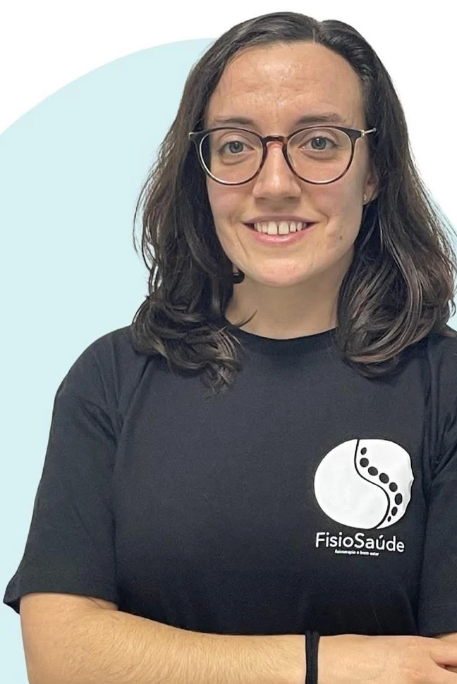
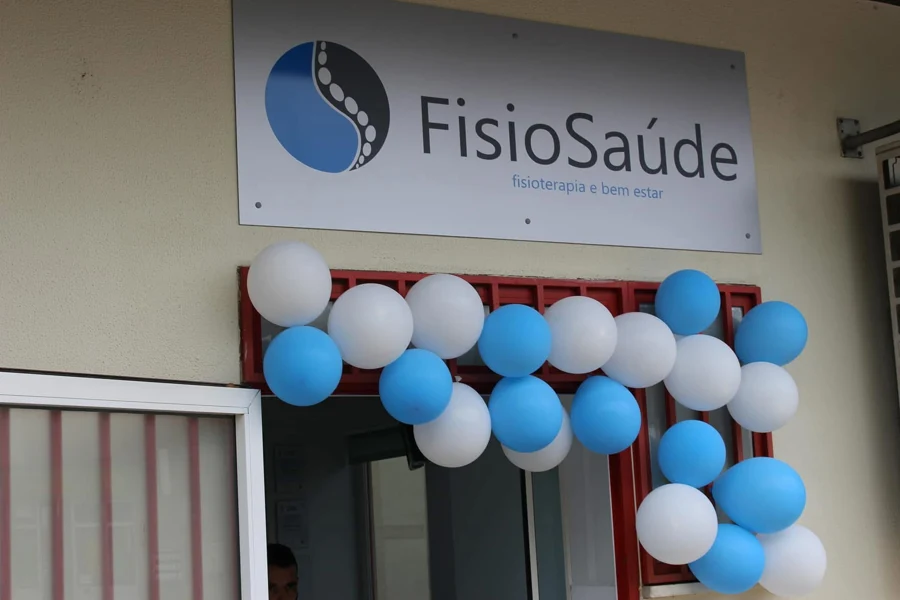
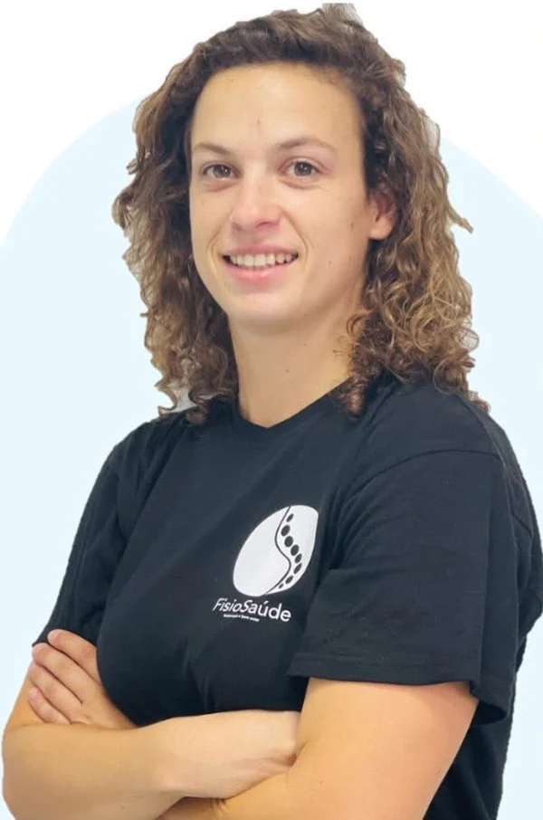
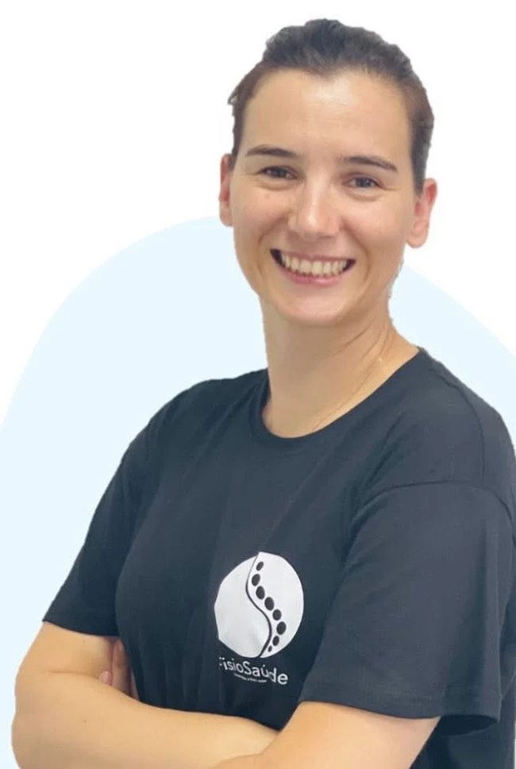

Elza Vaz
Fisioterapeuta
SAÚDE E MOVIMENTO, EM BRAGANÇA
Fisioterapia e reabilitação com atenção a cada pessoa. Na clínica ou no domicílio, o cuidado começa por compreender as suas necessidades.

PESSOAS QUE CUIDAM DE PESSOAS01 / OS NOSSOS CUIDADOS
Da avaliação à recuperação funcional, uma abordagem adaptada à condição clínica e aos objetivos de cada pessoa.
Recuperar.
Reabilitar.
Continuar.
Acompanhamento de condições musculoesqueléticas e neurológicas, lesões traumáticas e recuperação funcional após cirurgia.
Consulta de Fisiatria para avaliação funcional, diagnóstico médico e prescrição de um plano terapêutico adequado à situação clínica.
Fisioterapia, reabilitação e avaliação clínica na residência, para situações em que a deslocação à clínica está condicionada. A área de atendimento e a disponibilidade são confirmadas pela equipa.
Exercício orientado, com adaptação às necessidades e à capacidade funcional de cada pessoa. O enquadramento e a disponibilidade são definidos após contacto com a clínica.
A oferta inclui massagem, acupuntura, auriculoterapia e mesoterapia homeopática. A indicação e a disponibilidade de cada serviço devem ser confirmadas com a equipa.

FISIOSAÚDE · FISIOTERAPIA E BEM-ESTAR02 / A CLÍNICA
A FisioSaúde é uma clínica privada em Bragança dedicada à Medicina Física e de Reabilitação e à Fisioterapia.
O acompanhamento articula a avaliação clínica com a recuperação funcional, em ambulatório e no domicílio.
03 / A EQUIPA
Uma equipa de Fisiatria e Fisioterapia para acompanhar diferentes necessidades de reabilitação.
Fisioterapeuta

Fisioterapeuta

Fisioterapeuta
Médica Fisiatra
04 / ACORDOS E CONVENÇÕES
O acesso através de seguro ou plano de saúde depende da cobertura contratada e do serviço pretendido. Confirme as condições antes da marcação.
Para Saúde Global, Unisaúde e redes Ageas/Ocidental, contacte a clínica para confirmar o enquadramento do serviço e a morada associada à convenção.
Para outros planos e subsistemas, consulte a equipa.
ANTES DA CONSULTA
A marcação pode ser solicitada por telefone ou por email. O dia, o horário e o serviço ficam sujeitos a confirmação pela clínica.
A nova morada é Rua de Vale D’Álvaro, n.º 30, 5300-274 Bragança, nas antigas instalações da Fisinor. A anterior morada na Rua Professor Dionísio Gonçalves deixou de ser a referência para deslocações.
Estão disponíveis cuidados de reabilitação e consultas ao domicílio. Contacte a equipa para confirmar a área de cobertura, o serviço adequado e a disponibilidade.
Confirme com a equipa a documentação necessária. Se existirem, tenha disponíveis a prescrição médica, os exames relevantes e os dados do seguro ou plano de saúde.
05 / CONTACTOS E MARCAÇÕES
Chamadas para a rede móvel nacional.
geral.fisiosaude@gmail.comfisioterapia@fisio-saude.comAntigas instalações da Fisinor.
Abrir no mapaConsultas e tratamentos por marcação.
Morada anterior: Rua Professor Dionísio Gonçalves, 6, R/C Esq., 5300-237 Bragança.